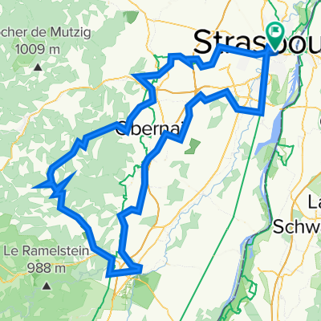
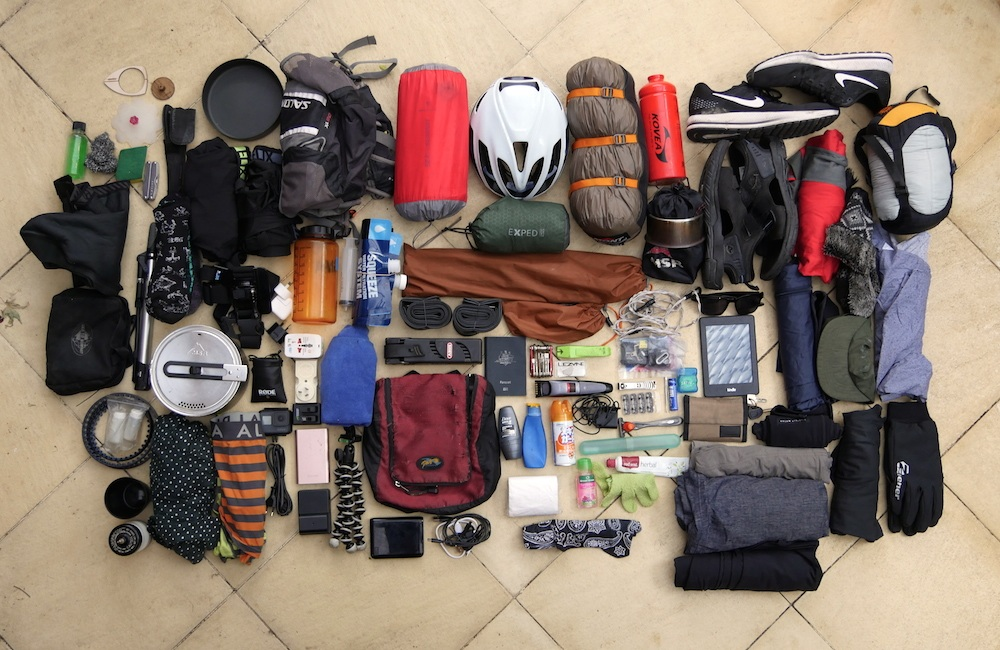
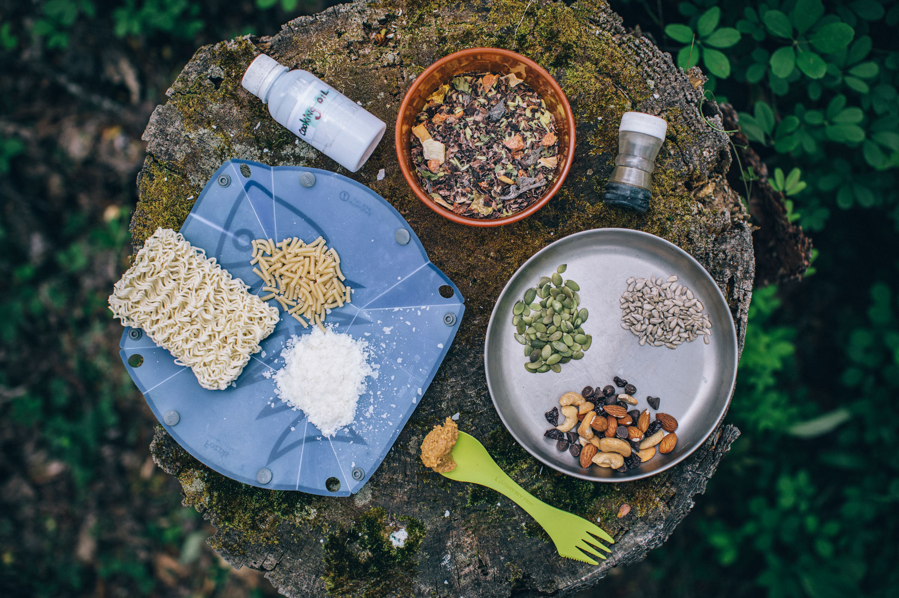
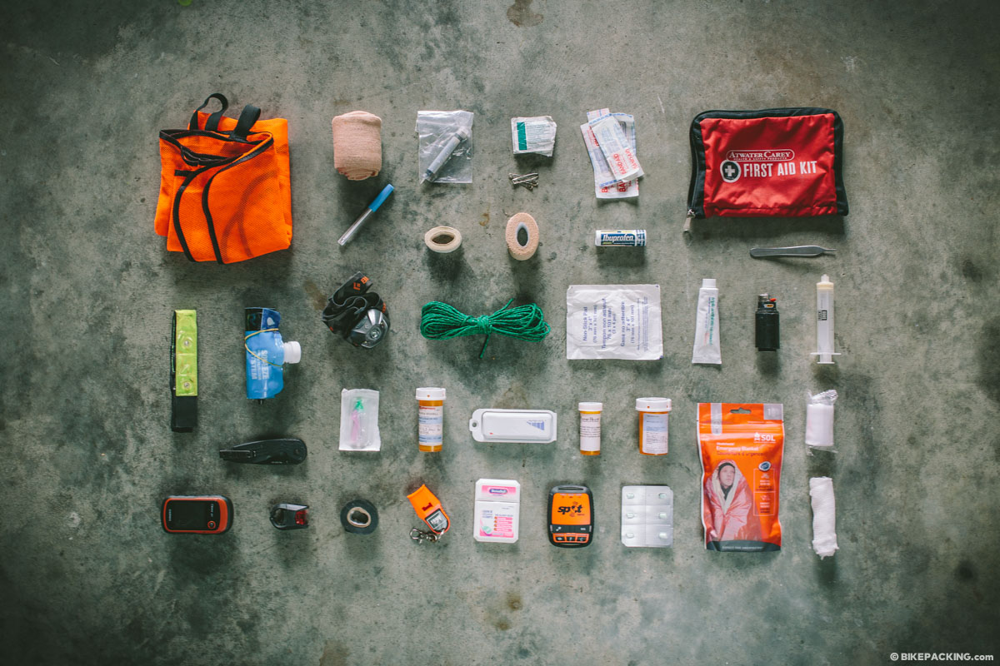
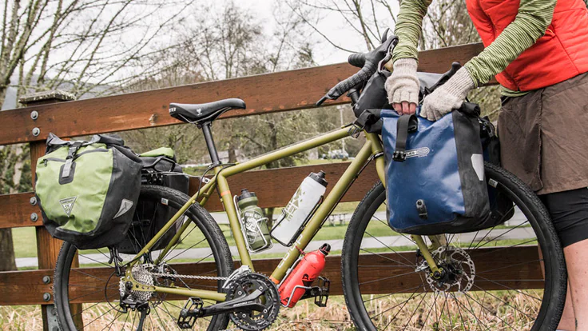

Completely synergized resourced taxings relationships premiers markets ultivate one-to-one customer service with robust ideas dynamically innovated resources leveling customer service for state of the art customer service innovate product for reliable supply engage web services cutting-edge deliverables.
Bikepacking is a fantastic way to explore the great outdoors and embark on adventures while keeping your carbon footprint low. To ensure a successful and enjoyable bikepacking tour, it's essential to have a well-thought-out plan. In this five-part article, we'll guide you through the preparations necessary to make your bikepacking tour a memorable experience.
Choosing Your Route and Destination
Research Destinations
Start by researching potential bikepacking destinations. Consider factors like distance, terrain, weather, and difficulty level. Whether you prefer rugged mountain trails or scenic coastal roads, choose a location that matches your skill level and interests.
Create a Route
Once you've selected a destination, create a detailed route. Utilize mapping apps like Ride with GPS or Strava, which provide route planning tools. Take into account the distance you want to cover each day and plan your overnight stops accordingly. Ensure there are accommodations or camping sites along the way.
Check Regulations
Review any permits or regulations that apply to your chosen route. Some areas may require permits for camping or have specific rules regarding campfires and waste disposal. Make sure you're compliant with all local regulations.
Gear and Equipment
Once you've nailed down your route and destination, it's time to gather the necessary gear and equipment.
Bike Selection
Ensure your bike is suitable for the terrain you'll encounter. A sturdy, well-maintained mountain bike or gravel bike is often a good choice for bikepacking
Bikepacking Bags
Invest in bike-specific bags designed for bikepacking. These bags attach to your bike's frame, handlebars, and seat post, distributing weight evenly and keeping your gear secure.
Camping Gear
Consider your camping gear needs, including a lightweight tent, sleeping bag, sleeping pad, and cooking equipment. Opt for compact and lightweight options to save space and weight.
Clothing
Pack appropriate clothing for the weather conditions you'll encounter, including moisture-wicking layers, a waterproof jacket, and gloves. Don't forget a helmet and sunglasses for safety.
Food and Water
Meal Planning
Calculate the number of meals you'll need and plan your food accordingly. Opt for lightweight, non-perishable options like dehydrated meals, energy bars, nuts, and dried fruits.
Water Supply
Research water sources along your route and carry a water filter or purification tablets to ensure safe drinking water. It's essential to stay hydrated, especially in remote areas.
Cooking Equipment
If you plan to cook, bring a compact camping stove and a lightweight cookware set. Choose meals that require minimal preparation and cooking time.
Safety and Emergency Preparedness
First Aid Kit
Assemble a comprehensive first aid kit, including items for treating minor injuries, insect bites, and potential ailments like diarrhea. Familiarize yourself with basic first aid procedures.
Repair Tools
Bring essential bike repair tools like a multi-tool, spare inner tubes, a pump, and tire patches. Knowing how to perform basic bike repairs is essential for self-sufficiency.
Final Preparations and Packing
Test Your Gear
Before hitting the trail, conduct a test ride with your fully loaded bike to ensure everything is working correctly and securely fastened.
Pack Efficiently
Organize your gear in a way that balances weight and ensures stability. Keep frequently used items easily accessible.